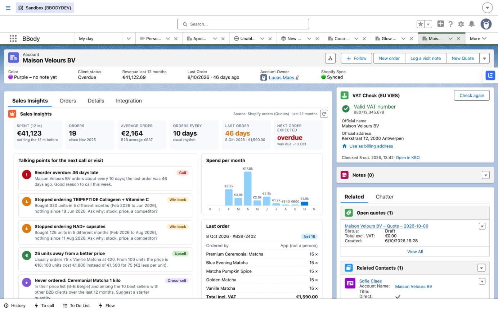
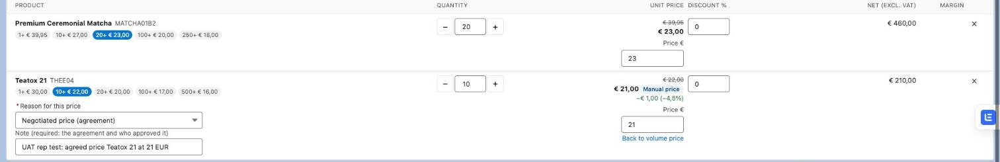

I build the systems businesses run on.Construo os sistemas que fazem as empresas funcionar.Je construis les systèmes qui font tourner les entreprises.
Certified solution architect and Apex developer, 8 years on Salesforce. I connect Salesforce to Shopify, build Sales Cloud CRMs that sales teams actually use, and automate the rest with AI. Delivered end to end, at a fixed price, by LMIDM Group.Architecte solution et développeur Apex certifié, 8 ans sur Salesforce. Je connecte Salesforce à Shopify, je construis des CRM Sales Cloud que les commerciaux utilisent vraiment, et j'automatise le reste avec l'IA. Livré de bout en bout, à prix fixe, par LMIDM Group.Arquiteto de soluções e desenvolvedor Apex certificado, 8 anos em Salesforce. Conecto o Salesforce ao Shopify, construo CRMs Sales Cloud que os vendedores realmente usam e automatizo o resto com IA. Entregue de ponta a ponta, a preço fechado, pela LMIDM Group.
Salesforce Apex → Lightning Web Components → Salesforce ↔ Shopify Plus B2B → Sales Cloud CRMs → Data migration → AI automation with Claude → Python → BESS & solar → Built and shipped solo →Salesforce Apex → Lightning Web Components → Salesforce ↔ Shopify Plus B2B → CRMs Sales Cloud → Migração de dados → Automação com IA (Claude) → Python → BESS & solar → Feito e entregue por mim →Salesforce Apex → Lightning Web Components → Salesforce ↔ Shopify Plus B2B → CRM Sales Cloud → Migration de données → Automatisation IA avec Claude → Python → BESS & solaire → Conçu et livré seul →
Architect and developer.Architecte et développeur.Arquiteto e desenvolvedor.
One person from the first workshop to go-live: I design the solution, code the Apex and train your team. No hand-off, nothing lost in translation.Une seule personne, du premier atelier à la mise en production : je conçois la solution, je code l'Apex et je forme votre équipe. Aucun passage de relais, rien ne se perd en route.Uma só pessoa, do primeiro workshop ao go-live: desenho a solução, codifico o Apex e treino sua equipe. Sem repasses, nada se perde no caminho.
Solution architectArchitecte solutionArquiteto de soluçõesApex / LWC developerDéveloppeur Apex / LWCDesenvolvedor Apex / LWCData migrationMigration de donnéesMigração de dadosTrainingFormationTreinamento
8 years8 ans8 anos
on Salesforce: enterprise programmes at Deloitte Digital, freelance since 2021sur Salesforce : programmes grands comptes chez Deloitte Digital, freelance depuis 2021em Salesforce: grandes contas na Deloitte Digital, freelance desde 2021
10 days10 jours10 dias
to deliver a complete custom CRM, from analysis to trainingpour livrer un CRM complet sur mesure, de l'analyse à la formationpara entregar um CRM completo sob medida, da análise ao treinamento
1 night1 nuit1 noite
to switch Bbody to production: 481 clients, 516 contacts and ~1,500 orders synced with Shopify, Zapier switched offpour basculer Bbody en production : 481 clients, 516 contacts et ~1 500 commandes synchronisés avec Shopify, Zapier éteintpara virar a Bbody em produção: 481 clientes, 516 contatos e ~1.500 pedidos sincronizados com o Shopify, Zapier desligado
Archi + DevArchi + DevArqui + Dev
I design the architecture and code it myself, no middlemanje conçois l'architecture et je la code moi-même, sans intermédiairedesenho a arquitetura e codifico eu mesmo, sem intermediários
Client resultsRésultats clientsResultados dos clientes
0 → 85%
of orders in Salesforce within 6 weeks: the sales team adopted itdes commandes dans Salesforce en 6 semaines : les commerciaux l'ont adoptédos pedidos no Salesforce em 6 semanas: o time comercial adotou
40
dormant clients reactivated in 6 weeks thanks to sales analyticsclients endormis réactivés en 6 semaines grâce aux analyticsclientes inativos reativados em 6 semanas com os analytics
24 → 0
Zapier steps replaced by native code: no more subscription or silent failuresétapes Zapier remplacées par du code natif : plus d'abonnement ni de panne silencieuseetapas Zapier substituídas por código nativo: sem assinatura nem falhas silenciosas
5 years5 ans5 anos
in production without a rebuild (Perspective Blue)en production sans refonte (Perspective Blue)em produção sem refazer (Perspective Blue)
Price fixed before we start.Prix fixé avant de commencer.Preço fechado antes de começar.Fixed-scope packages, no runaway hourly billing.Forfaits à périmètre fermé, pas de régie qui dérape.Pacotes de escopo fechado, sem horas que estouram.
You talk to the person who codes.Vous parlez à celui qui code.Você fala com quem codifica.No salesperson, no hidden junior.Pas de commercial, pas de junior caché derrière.Sem vendedor, sem júnior escondido.
Delivered documented.Livré documenté.Entregue documentado.101 pages and a user guide at Bbody: you are never dependent on me.101 pages et un guide utilisateur chez Bbody : vous ne dépendez jamais de moi.101 páginas e um guia do usuário na Bbody: você nunca depende de mim.
Reply within 48 h.Réponse sous 48 h.Resposta em 48 h. FR · EN · NL · PT
Bbody, before / afterBbody, avant / aprèsBbody, antes / depois
BeforeAvantAntes
AfterAprèsDepois
Prices retyped by handPrix ressaisis à la mainPreços redigitados à mão
Catalog prices and volume tiers applied automaticallyPrix du catalogue et paliers appliqués automatiquementPreços do catálogo e faixas aplicados automaticamente
CRM cut off from the shopCRM coupé de la boutiqueCRM desconectado da loja
Two-way sync: clients, contacts, orders, productsSynchronisation dans les deux sens : clients, contacts, commandes, produitsSincronização nos dois sentidos: clientes, contatos, pedidos, produtos
A fragile 24-step Zapier chainUne chaîne Zapier fragile de 24 étapesUma cadeia Zapier frágil de 24 etapas
Native Apex, monitored, with errors explained in plain languageApex natif, supervisé, erreurs expliquées en clairApex nativo, monitorado, erros explicados em linguagem simples
0 orders in Salesforce0 commande dans Salesforce0 pedidos no Salesforce
85% of orders, 88% of revenue85 % des commandes, 88 % du chiffre d'affaires85% dos pedidos, 88% do faturamento
01B2B wellness brand, Belgium & Netherlands · 2023 → 2026marca B2B de bem-estar, Bélgica e Holanda · 2023 → 2026marque bien-être B2B, Belgique et Pays-Bas · 2023 → 2026
Salesforce and Shopify Plus B2B working as one tool, in native Apex.Salesforce e Shopify Plus B2B funcionando como uma só ferramenta, em Apex nativo.Salesforce et Shopify Plus B2B qui fonctionnent comme un seul outil, en Apex natif.
Role: lead Salesforce Apex developer & integration architectPapel: desenvolvedor Apex líder e arquiteto da integraçãoRôle : développeur Apex principal et architecte de l'intégration
Referred by Salesforce Belgium's SME team. Sales Cloud set-up, then a full two-way integration.Indicação do time SME da Salesforce Bélgica. Implantação do Sales Cloud e depois uma integração completa nos dois sentidos.Mission apportée par l'équipe PME de Salesforce Belgique. Mise en place de Sales Cloud, puis intégration complète dans les deux sens.
The sales team sells to salons, pharmacies and retailers through a Shopify Plus B2B portal. Before: a fragile 24-node Zapier chain, prices retyped by hand, a CRM cut off from the shop. After: accounts, contacts, orders, products and prices flow both ways, and the team takes orders in Salesforce.O time comercial vende para institutos, farmácias e varejistas por um portal Shopify Plus B2B. Antes: uma cadeia Zapier frágil de 24 nós, preços redigitados à mão, um CRM desconectado da loja. Depois: contas, contatos, pedidos, produtos e preços fluem nos dois sentidos, e o time tira pedidos no Salesforce.L'équipe commerciale vend à des instituts, pharmacies et revendeurs via un portail Shopify Plus B2B. Avant : une chaîne Zapier fragile de 24 étapes, des prix ressaisis à la main, un CRM coupé de la boutique. Après : clients, contacts, commandes, produits et prix circulent dans les deux sens, et l'équipe prend ses commandes dans Salesforce.
Order screen with Shopify catalog prices, volume tiers and justified negotiated pricesTela de pedido com preços do catálogo Shopify, faixas de volume e preços negociados justificadosÉcran de commande avec les prix du catalogue Shopify, les paliers de volume et des prix négociés motivés
HMAC-signed webhooks, anti-loop and anti-duplicate locks, idempotent order sending, automatic retryWebhooks assinados HMAC, travas anti-loop e anti-duplicidade, envio idempotente, retry automáticoWebhooks signés HMAC, verrous anti-boucle et anti-doublon, envoi idempotent des commandes, reprise automatique
EU VAT checked against VIES, owner assigned by postcode, errors explained in plain language with a Fix buttonIVA europeu validado no VIES, responsável atribuído por CEP, erros explicados em linguagem simples com botão CorrigirTVA intracommunautaire vérifiée sur VIES, commercial attribué par code postal, erreurs expliquées en clair avec un bouton Corriger
"My day" for each rep, team ranking vs last year, win-back lists, management dashboards"Meu dia" para cada vendedor, ranking vs. ano anterior, listas de reconquista, dashboards de gestão« Ma journée » pour chaque commercial, classement de l'équipe face à l'an passé, listes de clients à reconquérir, tableaux de bord de direction
1 night1 nuit1 noite
to cut over to production, Zapier switched offpour basculer en production, Zapier éteintpara virar em produção, Zapier desligado
≈90%
of revenue now goes through Salesforce (85% of orders, from 0 before)du chiffre d'affaires passe désormais par Salesforce (85 % des commandes, contre 0 avant)do faturamento passa pelo Salesforce (85% dos pedidos, contra 0 antes)
481 · 516
clients and contacts synced both ways with Shopifyclients et contacts synchronisés dans les deux sens avec Shopifyclientes e contatos sincronizados nos dois sentidos com o Shopify
≈1,500
orders taken over with their full history (14,221 order lines)commandes reprises avec tout leur historique (14 221 lignes de commande)pedidos migrados com todo o histórico (14.221 linhas)
97 · 185
products and client prices across 3 catalogs (Belgium, Netherlands, retail), synced dailyproduits et prix clients répartis sur 3 catalogues (Belgique, Pays-Bas, retail), synchronisés chaque jourprodutos e preços de clientes em 3 catálogos (Bélgica, Holanda, varejo), sincronizados diariamente
888
VAT numbers checked against the EU register, 92 invalid ones caughtnuméros de TVA vérifiés dans le registre européen, 92 invalides détectésnúmeros de IVA verificados no registro europeu, 92 inválidos detectados
Result:Resultado:Résultat :phase 1 live since April 2026, full cutover on 13 October 2026. Before, no order was taken in Salesforce; six weeks later, 85% of orders (88% of revenue) are, and the sales reps use it every day. October 2026 was the brand's best sales month of the year.fase 1 em produção desde abril de 2026, virada completa em 13 de outubro de 2026. Antes, nenhum pedido era feito no Salesforce; seis semanas depois, 85% dos pedidos (88% do faturamento) passam por ele, e os vendedores o usam todos os dias. Outubro de 2026 foi o melhor mês de vendas da marca no ano.phase 1 en production depuis avril 2026, bascule complète le 13 octobre 2026. Avant, aucune commande n'était prise dans Salesforce ; six semaines plus tard, 85 % des commandes (88 % du chiffre d'affaires) y passent, et les commerciaux l'utilisent tous les jours. Octobre 2026 a été le meilleur mois de ventes de l'année pour la marque.
A true two-way integrationUne vraie intégration dans les deux sensUma integração de verdade nos dois sentidos
Salesforce → Shopify
Clients, shop locations and buyers with their B2B portal accessClients, points de vente et acheteurs avec leur accès au portail B2BClientes, lojas e compradores com acesso ao portal B2B
Orders taken by reps, with the client's catalog pricesCommandes prises par les commerciaux, aux prix du catalogue du clientPedidos feitos pelos vendedores, com os preços do catálogo do cliente
Volume tiers, discounts and negotiated prices with their reasonPaliers de volume, remises et prix négociés avec leur motifFaixas de volume, descontos e preços negociados com o motivo
Payment terms, one-off delivery addresses, PO numbersConditions de paiement, adresses de livraison ponctuelles, numéros de bon de commandeCondições de pagamento, endereços de entrega pontuais, números de pedido de compra
Shopify → Salesforce
New portal sign-ups, assigned to the right rep by postcodeNouvelles inscriptions au portail, attribuées au bon commercial par code postalNovos cadastros no portal, atribuídos ao vendedor certo por CEP
Portal orders and their full historyCommandes passées sur le portail et tout leur historiquePedidos do portal e todo o histórico
Order status: payment, shipping, tracking link, refunds and cancellationsStatut des commandes : paiement, expédition, lien de suivi, remboursements et annulationsStatus dos pedidos: pagamento, envio, rastreio, reembolsos e cancelamentos
Products, prices and catalogs, every dayProduits, prix et catalogues, chaque jourProdutos, preços e catálogos, todos os dias
Plus: EU VAT checked against VIES at entry, VAT rules per product, duplicates blocked, and every sync error explained to the rep with a Fix button.En plus : TVA vérifiée sur VIES dès la saisie, règles de TVA par produit, doublons bloqués, et chaque erreur de synchronisation expliquée au commercial avec un bouton Corriger.Além disso: IVA verificado no VIES na digitação, regras de IVA por produto, duplicidades bloqueadas e cada erro de sincronização explicado ao vendedor com um botão Corrigir.
Sales analytics that bring dormant clients backAnalytics de vendas que trazem clientes inativos de voltaDes analytics de vente qui font revenir les clients endormis
40
clients inactive for 90+ days reordered in the first 6 weeksclientes inativos há 90+ dias voltaram a comprar nas primeiras 6 semanasclients inactifs depuis plus de 90 jours ont recommandé dans les 6 premières semaines
≈2×
the usual reactivation rate (≈22 per 40 days before)a taxa habitual de reativação (≈22 a cada 40 dias antes)le rythme habituel de réactivation (≈22 par période de 40 jours avant)
25
of them had not ordered in over 6 monthsdeles não compravam havia mais de 6 mesesd'entre eux n'avaient plus commandé depuis plus de 6 mois
22%
of revenue in the period came from these clientsdo faturamento do período veio desses clientesdu chiffre d'affaires de la période vient de ces clients
Each account shows spend, order rhythm, next expected order and talking points (upsell, cross-sell, win back); each rep gets a "My day" list. 38 of the 40 reorders were placed by reps in Salesforce. Source: Bbody's Salesforce order data, 14 Oct – 23 Nov 2026.Cada conta mostra gasto, ritmo de pedidos, próximo pedido esperado e argumentos (upsell, cross-sell, reconquista); cada vendedor tem uma lista "Meu dia". 38 dos 40 pedidos foram feitos pelos vendedores no Salesforce. Fonte: dados de pedidos do Salesforce da Bbody, 14 out – 23 nov 2026.Chaque fiche client affiche les dépenses, le rythme de commande, la prochaine commande attendue et des arguments (upsell, cross-sell, reconquête) ; chaque commercial a sa liste « Ma journée ». 38 des 40 commandes ont été passées par les commerciaux dans Salesforce. Source : données de commandes Salesforce de Bbody, 14 oct. – 23 nov. 2026.

Client page. Spend, order rhythm, next expected order, and talking points ready for the next visit: reorder overdue, products the client stopped buying (win back), next volume tier (upsell), best sellers never ordered (cross-sell).Página do cliente. Gasto, ritmo de pedidos, próximo pedido esperado e argumentos prontos para a próxima visita: pedido atrasado, produtos que o cliente parou de comprar (reconquista), próxima faixa de volume (upsell), mais vendidos nunca pedidos (cross-sell).Fiche client. Dépenses, rythme de commande, prochaine commande attendue et arguments prêts pour la prochaine visite : commande en retard, produits que le client a arrêté d'acheter (reconquête), prochain palier de volume (upsell), meilleures ventes jamais commandées (cross-sell)."My day" for each sales rep. Monthly sales and margin, clients coloured by last contact, who to visit or call first, clients overdue to reorder with the revenue at risk, drafts not sent."Meu dia" para cada vendedor. Vendas e margem do mês, clientes coloridos pelo último contato, quem visitar ou ligar primeiro, clientes com pedido atrasado e a receita em risco, rascunhos não enviados.« Ma journée » pour chaque commercial. Ventes et marge du mois, clients colorés selon le dernier contact, qui visiter ou appeler en premier, clients en retard de commande avec le chiffre d'affaires en jeu, brouillons non envoyés.Volume tiers apply on their own, and the order screen suggests the next tier.As faixas de volume se aplicam sozinhas e a tela sugere a próxima.Les paliers de volume s'appliquent seuls, et l'écran de commande suggère le palier suivant.

A negotiated price requires a reason, carried through to the Shopify invoice.Um preço negociado exige um motivo, levado até a fatura Shopify.Un prix négocié exige un motif, repris jusqu'à la facture Shopify.
Real Bbody interface (sandbox). Client names, contacts and some figures replaced with demo data.Interface real da Bbody (sandbox). Nomes de clientes, contatos e alguns números substituídos por dados de demonstração.Interface réelle de Bbody (sandbox). Noms de clients, contacts et certains chiffres remplacés par des données de démonstration.
A full recruitment CRM on Sales Cloud, still in use five years later.Um CRM de recrutamento completo no Sales Cloud, ainda em uso cinco anos depois.Un CRM de recrutement complet sur Sales Cloud, toujours utilisé cinq ans plus tard.
Role: Salesforce consultant & developer, end to endPapel: consultor e desenvolvedor Salesforce, de ponta a pontaRôle : consultant et développeur Salesforce, de bout en bout
Three partners recruiting from spreadsheets and a shared inbox. Now every consultant works from their lists of candidates, jobs, applications and interviews, and partners get a dashboard per consultant.Três sócios recrutando com planilhas e uma caixa de e-mail compartilhada. Agora cada consultor trabalha a partir das suas listas de candidatos, vagas, candidaturas e entrevistas, e os sócios têm um dashboard por consultor.Trois associés qui recrutaient avec des tableurs et une boîte mail partagée. Aujourd'hui, chaque consultant travaille depuis ses listes de candidats, offres, candidatures et entretiens, et les associés ont un tableau de bord par consultant.
Data model: candidate → job → application → interview → placementModelo de dados: candidato → vaga → candidatura → entrevista → colocaçãoModèle de données : candidat → offre → candidature → entretien → placement
A passed interview creates the placement automatically; approval process above a deal thresholdEntrevista aprovada cria a colocação automaticamente; aprovação acima de um valor de negócioUn entretien réussi crée le placement automatiquement ; validation obligatoire au-delà d'un montant
Outlook integration, two security profiles, activity and pipeline dashboardsIntegração com Outlook, dois perfis de segurança, dashboards de atividade e pipelineIntégration Outlook, deux profils de sécurité, tableaux de bord d'activité et de pipeline
Result:Resultado:Résultat :delivered in 10 days, from analysis to training. Still used and extended in 2026.entregue em 10 dias, da análise ao treinamento. Ainda em uso e evoluindo em 2026.livré en 10 jours, de l'analyse à la formation. Toujours utilisé et enrichi en 2026.
From Bullhorn to Salesforce without losing the history.Do Bullhorn ao Salesforce sem perder o histórico.De Bullhorn à Salesforce sans perdre l'historique.
Role: Salesforce consultant, developer & data migration leadPapel: consultor, desenvolvedor Salesforce e líder da migraçãoRôle : consultant, développeur Salesforce et responsable de la migration
An engineering, real-estate, technical sales and IT recruiter whose tool no longer matched its processes. Partners couldn't see monthly deal value per consultant, and consultants could export the database.Uma consultoria de engenharia, imobiliário, vendas técnicas e TI cuja ferramenta não acompanhava mais os processos. Os sócios não viam o valor mensal por consultor, e os consultores podiam exportar a base.Un cabinet spécialisé ingénierie, immobilier, vente technique et IT dont l'outil ne suivait plus les process. Les associés ne voyaient pas la valeur mensuelle par consultant, et les consultants pouvaient exporter la base.
Accounts, candidates, contacts and jobs migrated with Data Loader: mapping, dedup, sandbox pass, then production over a weekendContas, candidatos, contatos e vagas migrados com Data Loader: mapeamento, deduplicação, teste em sandbox e produção num fim de semanaComptes, candidats, contacts et offres migrés avec Data Loader : mapping, dédoublonnage, passage en sandbox, puis production sur un week-end
Monthly value per consultant dashboards; export locked for the consultant profileDashboards de valor mensal por consultor; exportação bloqueada no perfil consultorTableaux de bord de valeur mensuelle par consultant ; export bloqué pour le profil consultant
Result:Resultado:Résultat :live in three months, history kept, 8 users trained and the firm running its own day-to-day admin.em produção em três meses, histórico preservado, 8 usuários treinados e a empresa autônoma na administração do dia a dia.en service en trois mois, historique conservé, 8 utilisateurs formés et cabinet autonome sur l'administration courante.
04my own DTC brand, Shopify + Amazon, 5 countries · 2022 →minha marca DTC, Shopify + Amazon, 5 países · 2022 →ma propre marque DTC, Shopify + Amazon, 5 pays · 2022 →
An e-commerce brand that runs on autopilot, with AI.Uma marca de e-commerce que roda no piloto automático, com IA.Une marque e-commerce qui tourne en pilote automatique, avec l'IA.
Role: founder, Python & AI automation developerPapel: fundador, desenvolvedor Python e automação com IARôle : fondateur, développeur Python et automatisation IA
My permanent test bench for what I then build for clients: everything an e-commerce operator does by hand, turned into scheduled jobs.Meu laboratório permanente para o que depois construo para clientes: tudo o que um operador de e-commerce faz à mão, transformado em jobs agendados.Mon banc d'essai permanent pour ce que je construis ensuite pour mes clients : tout ce qu'un e-commerçant fait à la main, transformé en tâches planifiées.
AI support agent (Claude) on the site, escalation to TelegramAgente de suporte com IA (Claude) no site, escalonamento para o TelegramAgent de support IA (Claude) sur le site, escalade sur Telegram
18 scheduled jobs: order routing, FBA refund audit, invoices to accounting, P&L per channel18 jobs agendados: roteamento de pedidos, auditoria de reembolsos FBA, notas para a contabilidade, P&L por canal18 tâches planifiées : routage des commandes, audit des remboursements FBA, factures vers la compta, P&L par canal
Amazon tracking → Shopify → Klaviyo every 15 minutesRastreio Amazon → Shopify → Klaviyo a cada 15 minutosSuivi colis Amazon → Shopify → Klaviyo toutes les 15 minutes
Result:Resultado:Résultat :94% open rate on "shipped" emails, AI support at €0.40 a month, no manual data entry in the brand's daily routine.94% de abertura nos e-mails de envio, suporte com IA a €0,40 por mês, nenhuma digitação manual no dia a dia da marca.94 % d'ouverture sur les emails « expédié », support IA à 0,40 € par mois, aucune saisie manuelle au quotidien.
Three years of enterprise Salesforce programmes before going freelance.Três anos de programas Salesforce em grandes contas antes do freelance.Trois ans de programmes Salesforce grands comptes avant le freelance.
Role: Salesforce consultant & developerPapel: consultor e desenvolvedor SalesforceRôle : consultant et développeur Salesforce
Sales Cloud and Service Cloud for insurance (AXA), banking and life sciences, a proof of concept for the Brussels-Capital Region, in teams of 5 to 30. Functional analysis, configuration, UAT, training, then delivery coordination.Sales Cloud e Service Cloud para seguros (AXA), bancos e life sciences, uma prova de conceito para a Região de Bruxelas-Capital, em times de 5 a 30 pessoas. Análise funcional, configuração, UAT, treinamento e depois coordenação de entrega.Sales Cloud et Service Cloud pour l'assurance (AXA), la banque et les life sciences, un proof of concept pour la Région de Bruxelles-Capitale, dans des équipes de 5 à 30 personnes. Analyse fonctionnelle, configuration, recette, formation, puis coordination de la livraison.
What it brings today:O que isso traz hoje:Ce que ça apporte aujourd'hui :integrator standards (sandbox, tests, documentation, training) at the scale and cost of a small business.padrões de integrador (sandbox, testes, documentação, treinamento) na escala e no custo de uma pequena empresa.les standards d'un intégrateur (sandbox, tests, documentation, formation) à l'échelle et au coût d'une PME.
Fixed-scope offers.Ofertas de escopo fechado.Des forfaits à périmètre fermé.
Audit and sprint at a fixed price. Larger projects are quoted after a free 30-minute call. Excl. VAT, 100% remote.Audit et sprint à prix fixe. Les projets plus larges sont chiffrés après un appel gratuit de 30 minutes. Prix HT, 100 % à distance.Auditoria e sprint a preço fechado. Projetos maiores são orçados após uma conversa gratuita de 30 minutos. Sem impostos, 100% remoto.
Map of your flows, Zaps, duplicates and risks. A written report and a costed plan you can hand to anyone.Cartographie de vos flux, Zaps, doublons et risques. Un rapport écrit et un plan chiffré que vous pouvez confier à qui vous voulez.Mapa dos fluxos, Zaps, duplicidades e riscos. Relatório escrito e plano orçado que você pode entregar a quem quiser.
€1,500· 2 days2 jours2 dias
Audit + 10-day sprintAudit + sprint de 10 joursAuditoria + sprint de 10 dias
The audit, then 10 days of build on your top priority: integration, CRM, analytics or AI automation. Delivered to production and documented.L'audit, puis 10 jours de réalisation sur votre priorité n°1 : intégration, CRM, analytics ou automatisation IA. Livré en production et documenté.A auditoria e depois 10 dias de execução na sua prioridade n°1: integração, CRM, analytics ou automação com IA. Entregue em produção e documentado.
Clients, contacts, orders, prices and order status in sync both ways, in native Apex, like at Bbody.Clients, contacts, commandes, prix et statuts synchronisés dans les deux sens, en Apex natif, comme chez Bbody.Clientes, contatos, pedidos, preços e status sincronizados nos dois sentidos, em Apex nativo, como na Bbody.
On quoteSur devisSob orçamento
Custom Sales Cloud CRMCRM Sales Cloud sur mesureCRM Sales Cloud sob medida
Data model, automation, profiles, dashboards, data migration and training. A complete CRM in about 10 days.Modèle de données, automatisations, profils, tableaux de bord, migration des données et formation. Un CRM complet en une dizaine de jours.Modelo de dados, automações, perfis, dashboards, migração e treinamento. Um CRM completo em cerca de 10 dias.
On quoteSur devisSob orçamento
Sales analytics & AIAnalytics de vente & IAAnalytics de vendas & IA
Per-client insights, "My day" for each rep and win-back lists, or a manual process replaced by a Claude + Python agent.Indicateurs par client, « Ma journée » pour chaque commercial et listes de reconquête, ou un process manuel remplacé par un agent Claude + Python.Insights por cliente, "Meu dia" para cada vendedor e listas de reconquista, ou um processo manual substituído por um agente Claude + Python.
On quoteSur devisSob orçamento
Maintenance & evolutionsMaintenance et évolutionsManutenção e evoluções
A monthly block of hours for requests, small changes and job monitoring. Reply within one business day.Un volume d'heures mensuel pour les demandes, petites évolutions et la surveillance des jobs. Réponse sous 1 jour ouvré.Um pacote mensal de horas para pedidos, pequenas evoluções e monitoramento. Resposta em 1 dia útil.
Energy tools.Ferramentas de energia.Outils énergie.
Market intelligence to asset operations — built individually, from scratch, with Python and AI.Da inteligência de mercado à operação de ativos — construídas individualmente, do zero, com Python e IA.De la market intelligence à l'exploitation des actifs — construits seul, de zéro, avec Python et l'IA.
1,439 sites. One map.1.439 unidades. Um mapa.1 439 sites. Une carte.
200–300 kW demand, scored by consumption, power quality (DIC/FIC) and tariff exposure. Filter by sector, state, utility and market.Demanda 200–300 kW, priorizada por consumo, qualidade de energia (DIC/FIC) e exposição tarifária. Filtre por setor, UF, distribuidora e mercado.Demande de 200 à 300 kW, notée selon la consommation, la qualité de l'électricité (DIC/FIC) et l'exposition tarifaire. Filtres par secteur, État, distributeur et marché.
Note:Nota:Note :the C&I client map is a demo with anonymized data (no company names, tax IDs, contacts or addresses); methodology and analytics preserved. The Asset Forecast and GD Analyzer links open public demo versions; the production systems are internal company tools.o mapa de clientes C&I é uma demo com dados anonimizados (sem razão social, CNPJ, contatos ou endereços); metodologia e indicadores preservados. Os links do Asset Forecast e do GD Analyzer abrem versões públicas de demonstração; os sistemas em produção são ferramentas internas da empresa.la carte des clients C&I est une démo aux données anonymisées (sans raison sociale, identifiant fiscal, contact ni adresse) ; méthodologie et indicateurs conservés. Les liens Asset Forecast et GD Analyzer ouvrent des versions de démonstration publiques ; les systèmes en production sont des outils internes à l'entreprise.
Tell me about your project.Conte-me sobre o seu projeto.Parlez-moi de votre projet.
Three lines are enough: the tools in place, what's stuck, who suffers from it. I reply within 48 hours.Três linhas bastam: as ferramentas em uso, o que trava, quem sofre com isso. Respondo em até 48 horas.Trois lignes suffisent : les outils en place, ce qui coince, qui en souffre. Je réponds sous 48 heures.
I use Google Analytics to measure visits to this site (anonymised). OK for you?Uso o Google Analytics para medir as visitas deste site (anonimizado). Tudo bem?J'utilise Google Analytics pour mesurer les visites de ce site (anonymisées). D'accord ?